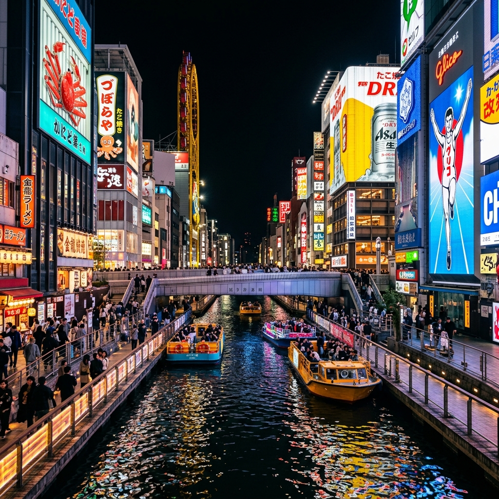
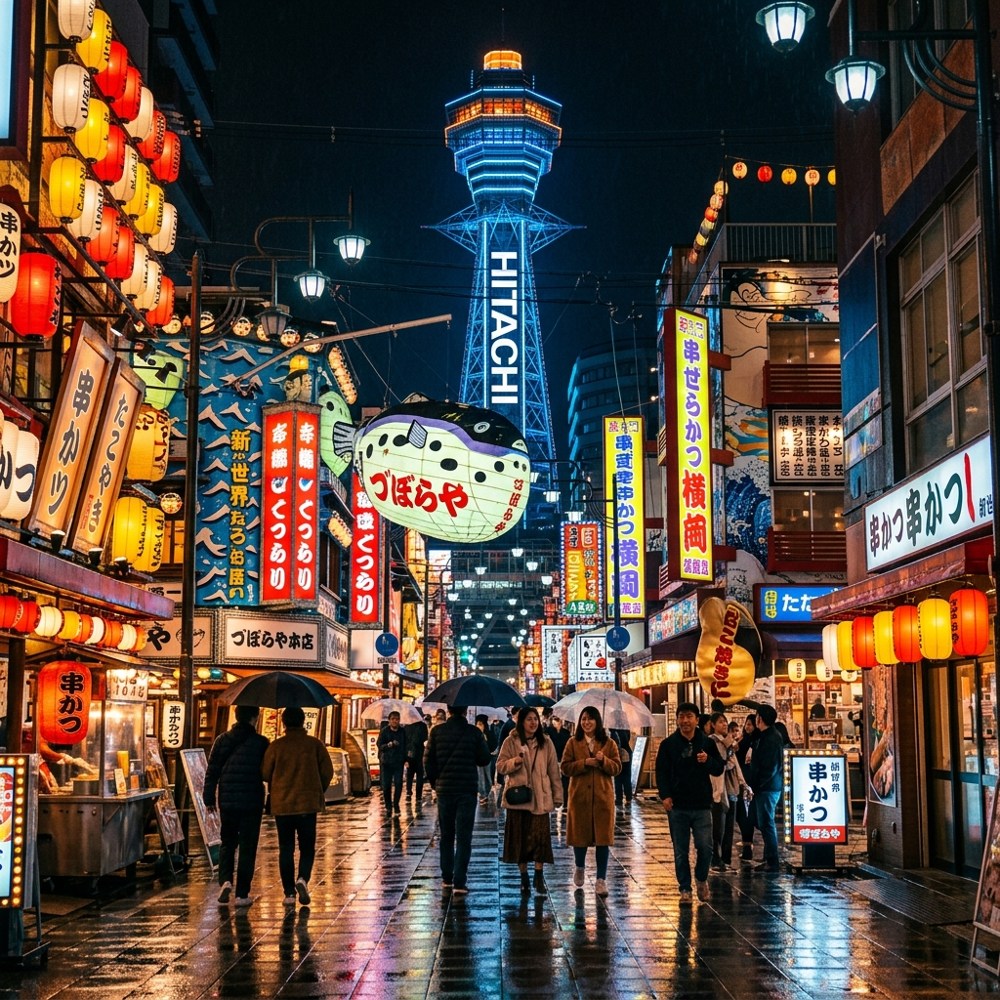
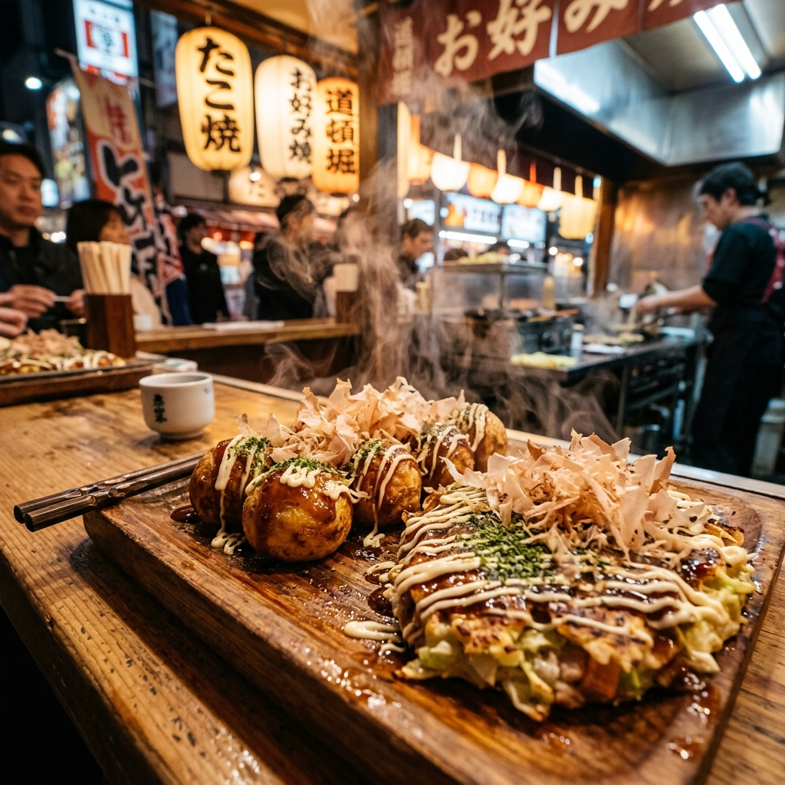

화려한 도톤보리의 네온사인부터 웅장한 오사카성, 짜릿한 유니버설 스튜디오와 군침 도는 먹거리까지. 당신의 오사카 여행이 더 편안하고 특별해질 수 있도록 모든 필수 정보를 모았습니다.
인천/김포 출발 기준 약 1시간 40분 소요됩니다. 시차는 한국과 동일(GMT+9)하여 시차 적응이 필요 없습니다.
대한민국 국적자는 관광 목적으로 최대 90일 무비자 입국이 가능합니다. 신속한 입국 심사를 위해 Visit Japan Web 등록을 사전에 완료하는 것을 추천합니다.
일본 엔화(JPY, ¥)를 사용합니다. 최근 100엔당 대략 850~950원 선을 유지하고 있습니다. 대형 점포는 카드 결제가 잘 되지만, 로컬 맛집이나 버스 등은 여전히 현금이 필요합니다.
일본은 110V, 60Hz를 사용하며 플러그 모양이 11자 형태(일명 돼지코, A타입)입니다. 스마트 기기 충전을 위해 멀티 어댑터 또는 변환 플러그를 꼭 지참하세요.
요즘 오사카 여행은 환전 수수료가 없는 외화 충전식 카드(트래블로그, 트래블월렛 등)를 사용하면 매우 편리합니다. 오사카 시내 곳곳의 이온(AEON) ATM 또는 세븐일레븐 ATM에서 수수료 없이 엔화 현찰을 인출할 수 있습니다.
오사카에 가면 꼭 방문해봐야 할 인기 관광지를 필터별로 살펴보세요.

쇼핑 & 맛집오사카의 심장이자 밤낮없이 활기찬 네온사인의 거리. 글리코상 앞 인증샷은 필수!
웅장한 해자와 화려한 천수각이 돋보이는 오사카 최고의 역사 유적지이자 벚꽃 명소.

복고풍 & 거리1900년대 레트로 일본 감성이 고스란히 남아있는 거리. 오사카 대표 꼬치 튀김인 '쿠시카츠'의 본고장.

오사카 미식'먹다가 망한다'는 오사카! 정통 타코야끼, 촉촉한 오코노미야끼, 바삭한 쿠시카츠를 맛보세요.
복잡한 일본의 지하철/철도 시스템! 나에게 딱 맞는 패스를 찾아보세요.
추천 목적지: 난바, 신사이바시, 덴덴타운
특징: 난바까지 환승 없이 가장 빠르게 이동 가능. 특급 라피트(Rap:t)는 약 38분 소요(전석 지정석), 공항급행은 약 44분 소요됩니다.
추천 목적지: 텐노지, 우메다(오사카역), 신오사카, 교토
특징: 키티 래핑 열차로 유명하며 우메다나 신오사카, 혹은 교토로 바로 넘어갈 때 가장 빠르고 쾌적합니다.
추천 목적지: 우메다 주요 호텔 앞, 유니버설 스튜디오 재팬
특징: 짐이 무겁거나 숙소가 리무진 정류장 근처인 경우, 혹은 USJ로 직행할 때 짐을 싣고 편안히 앉아갈 수 있어 편리합니다.
나의 여행 성향에 맞는 최적의 교통권을 추천해 드립니다. 아래 질문에 체크해 보세요!
1. 이번 오사카 여행 중 교토, 고베, 나라 등 주변 도시로 갈 계획이 있나요?
준비가 끝난 아이템을 체크해 보세요. 브라우저에 저장되어 언제든 확인할 수 있습니다.
인원, 일정, 여행 스타일에 맞춘 대략적인 지출 예산을 실시간으로 계산해보세요.
현지에서 실수하지 않기 위해 꼭 알아야 할 팁과 간단한 기초 회화 카드입니다.
도쿄를 포함한 간동(오른쪽 비우기) 지방과 달리, 오사카는 에스컬레이터에서 오른쪽에 서고 왼쪽을 비워두는 것이 현지 관례입니다. 단, 최근 안전을 위해 걷지 않기를 권장하기도 합니다.
일본의 소비세는 원칙적으로 10%입니다. 동일한 상점(또는 쇼핑몰)에서 하루 동안 세금 제외 5,000엔 이상(세금 포함 5,500엔 이상) 구매 시 면세 혜택을 받을 수 있습니다. 결제 시 꼭 실물 여권을 제시하세요.
일본은 팁 문화가 전혀 없습니다. 식당, 택시 등에서 거스름돈을 그대로 전부 돌려받으시면 됩니다. 식당 계산 시 점원이 돈 트레이(코인 쟁반)에 현금을 놓을 수 있게 준비해 둔 곳이 많으니 트레이에 돈을 올려두세요.
일본의 길거리에는 쓰레기통이 거의 없습니다. 테이크아웃 음료수나 쓰레기가 발생하면 가방에 보관하여 숙소로 가져가거나, 편의점에서 물건을 구매하고 편의점 내/외부의 분리수거 쓰레기통을 이용하세요.